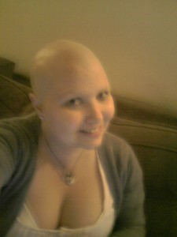
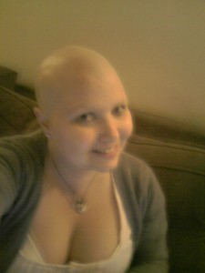

I feel it’s time that I shared with you my baldness…it’s something I’ve been dealing with for nearly 6 months now as it started straight after my very first chemo. At home I’m happy (well, not exactly happy?!) being bald with Chris and my family and even with my friends. Anyone who’s close to me will have seen me bald. I’m yet to go out in public in all my baldness…Anna thinks I should as she thinks I look lovely?! Hmmm, that’s debatable! I can see why Jade Goody did it and why Gail Porter does it and I truly think they both look/looked good with it. I do feel half the time that I’m wearing a wig to make other people comfortable rather than myself! Sometimes if it’s hot or itchy I just want to take it off but I know it would shock! Also though, I can blend in with my wig on as people genuinly don’t notice and so don’t think I’m ill or any different from anyone else. Sometimes this is a good thing and I can be ‘normal’ but sometimes it’s frustrating, especially now I’m on crutches when clearly everyone just assumes I’ve broken my leg or something…I’ve had so many random strangers ask me “So what have you done then?” or as one woman working in Tesco kindly said “What have you done then you silly girl?!” … I had to walk (crutch!) away and pretend I hadn’t heard as I was fuming and to answer “I’ve got cancer” would have been far too shocking and harsh for her to handle, I’m sure she would have been mortified! Satisfying for me in a way but I would have felt too guilty! Again, thinking of making other people feel comfortable, not myself! Not that I really felt like discussing my illness with a complete stranger working in Tesco! It just goes to show you shouldn’t make assumptions and you can’t take things at face value as you just don’t know what’s going on with people you pass in everyday life. But then again most of us have the common sense and manners not to call someone you’ve never seen before in your life ‘a silly girl’!!
Anyway, I’m going to share some bald photos with you…I don’t know why, I guess just because this is me now and it will be for a long time so I feel like sharing. I’m not fishing for comments telling me I look lovely because I know I don’t but that’s not the idea! Thank goodness for wigs and make up and false eyelashes but this are photos without any of that! I’ll have to make myself up with my fake lashes and my other wigs so you can see them too but for now, this is me bare faced and bare headed…!
Desperately clinging onto my last bits of hair…during a long and boring hospital stay Anna plaited them for me! She said she’d made me look like Little Miss Sunshine with my mini pigtails!

Woolly hat to keep my head warm, shorts to keep my scar out, post surgical stockings and pink slippers! Good look!


 

It’s amazing how cold your head gets when you’ve got no hair! My woolly hat is never far away in the house, a lot more cosy than wearing a wig! It’s crazy the way my hair loss happened, the bulk of it fell out really quickly the first week after the first chemo. But I was left with just a bit left at the front for months and months. I constantly debated over whether or not to shave it but I spent so long in hospital and when I was out the first thing on my list of things to do wasn’t really shaving my head! Anyway after surgery when I was on my break from chemo, the rest of it fell out! Bizarre! So I was only left with a few long hairs here and there which I got my mum to cut for me! & then Chris enjoyed an evening cuddled up on the sofa, plucking out long hairs that he kept spotting! He loved it! We must have looked like monkeys when they pick nits from each others’ heads! Nice! Certainly no nits on my head, they’d have nowhere to live and you’d definitely see them! Now I have a very slight regrowth of stubble but it’s very soft and very short and I think it’s stopped again as I’m back on the chemo. Watch this space…!
Woahhhhhh, Scamp, now I never saw you with the plaits, they’re brilliant, good work Anna!!!
You are a very attractive bald I must say, and no, I’m not just saying it Wiggy Wiggerson!!
I’m about to start getting ready for ‘eat as much as you can’, haha!!!
Enjoyed today despite the M3 being a carpark, it did have it’s perks though!!!
xxxxxxxxxxxxxxx